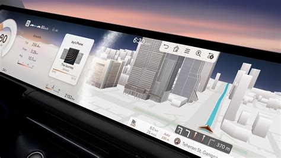

Systems such as Apple CarPlay and Android Auto allow drivers to connect their phones to the vehicle's display, providing access to navigation, music, phone calls, messaging, and other compatible applications. More recently, automakers have increasingly incorporated internet connectivity, voice assistants, streaming services, and software updates directly into vehicle infotainment centers.
What is an ifotainment system? Infotainment is a combination of information and entertainment. It is a system that provides both information and entertainment to the driver and passengers of a vehicle. Infotainment systems typically include features such as navigation, music and video playback, hands-free calling, and internet connectivity. They may also include features such as voice recognition, touchscreens, and smartphone integration. Infotainment systems are designed to enhance the driving experience by providing drivers with access to information and entertainment while on the road.